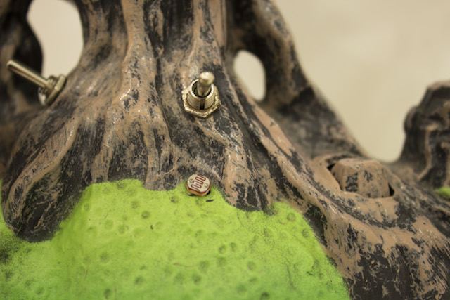

P#i¶îuPi‰Piu

The series of objects P#i¶îuPi‰Piu consists of decorative sound toys modified through the hacking of its electronic circuit for the creation of new instruments. Of various shapes and different sounds, these objects were explored using the technique of circuit bending, looking for random sounds in their internal circuits or simply manipulating the recorded sound of birdsong, distorting or altering their speed by adding new electronic components. In the format of sound installations, this objects were presented at exhibitions, interacting with the public in order to create a sound environment consisting of distortions and noises of modified birds singing.


Louro e Bambu – segundo acto, figuração do exótico, CAAA, Guimarães 2015
Group exhibition
Group exhibition


L # i v ¶ î n g # r ‰ o m, Nartece, Porto 2015
Solo exhibition
Solo exhibition
15 minutes of fame, Extéril, Porto 2013
Group exhibition
Group exhibition
P # i ¶ î u P i ‰ P i u & ▅ , Má Arte Art Gallery, Aveiro 2014
Group exhibition
Group exhibition